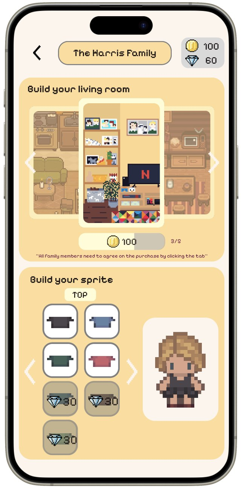
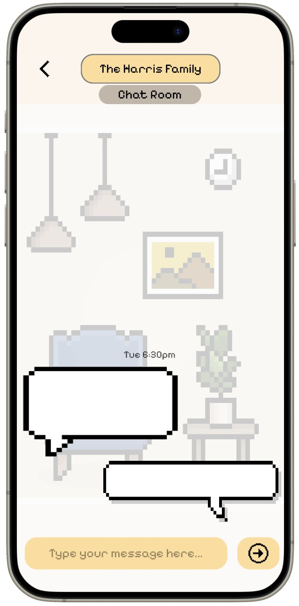
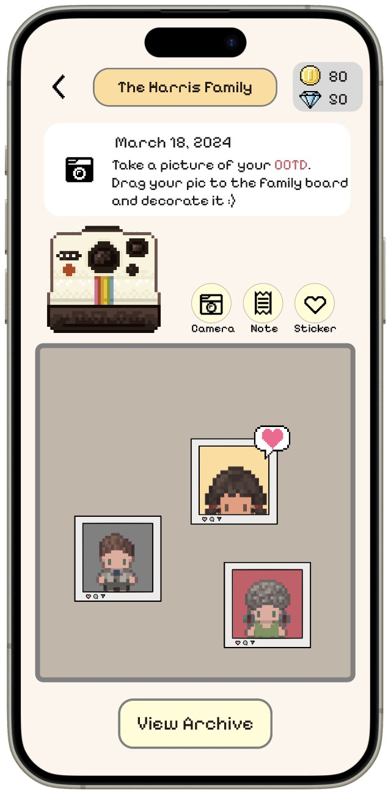
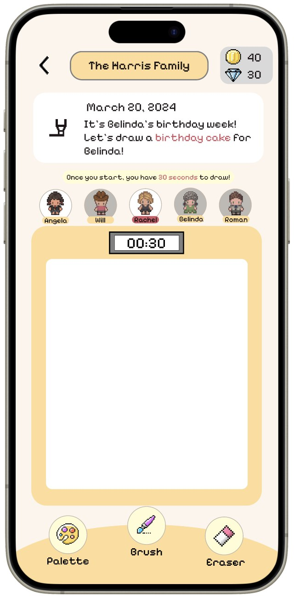
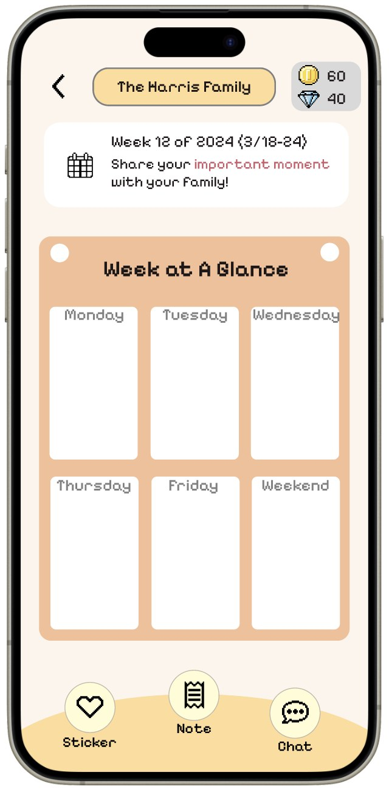

famiLink
UX Research & Experience Design
For families who live apart, staying close slowly turns into a chore: weekly video calls feel like appointments, and the small everyday moments go unshared. Over ten weeks, our team researched, designed and play-tested a shared virtual home that makes staying in touch feel like play, not duty.
My part
- User ResearchInterviewed long-distance families, from international students to parents, and turned what they said into the problems famiLink had to solve.
- Competitive AnalysisMapped the space from Life360 to BeReal to find what was missing: family apps were useful but cold, and warm apps weren’t built for families.
- Test DesignCo-wrote the storylines for our role-play tests, so participants could live a week as a family on famiLink in twenty minutes.
- Context
- COGS 123, UC San Diego
- Team
- 4, UC San Diego
- Timeline
- 10 weeks, Winter 2024
- For
- Long-distance families
- Methods
- Interviews, competitive analysis, role-play tests, surveys
- Tools
- Figma, FigJam
- Team site
- famiLink portfolio ↗
Living room
Build your sprite
Switch modes
A home your family shares, wherever they are
Each family member appears as a sprite in one cozy living room. Together they complete one small prompt a day, and earn coins to decorate their shared home. Final prototype in Figma.
01 · Understand
Who we designed for
Distributed families: international students studying abroad, college kids in other cities, parents whose children have moved away, people working far from home. They still want to stay close, but distance wears the connection down.
Most of these families already talk, through texts during the week and a video call on the weekend. We weren’t replacing those. We were looking for what falls between them: the small, everyday moments that never make it into a weekly call.
02 · Research · February 2024
Weekly calls work, but they feel like appointments
We ran semi-structured interviews with seven people aged 18 to 51: students living far from their families in China and Hong Kong, a recent graduate, and two parents whose children study in the U.S. We also read prior work on family communication, from how families choose messaging apps to shared family boards.
- 7
- interviews, ages 18–51
- 4 of 7
- named time zones or clashing schedules as the main obstacle
- 5 of 7
- preferred small daily prompts over a weekly update
“Time difference between countries limits our communication mainly to weekends. I wish we can contact more frequently.”
Parent, 51
“I found myself lose my memory to share my week through the long video call. Effortless small, fun tasks rather than a reserved one hour meeting.”
Student, 22
“Considering we already have numerous options for straightforward communication, what would truly set this app apart is its ability to evoke a sense of warmth.”
International student, 23
Three things kept coming up. Long weekly calls are the default, but people forget what to share and the call starts to feel like a meeting. Time zones make real-time contact hard to plan. And nobody wanted another messenger: what they missed was warmth.
03 · Landscape
Useful, or warm. Not both.
Next we looked at what families already use. Family tools like Life360 and Google Families are useful, but they are about locations and parental controls, not about being close. Playful apps like BeReal and SimCity create real engagement, but they aren’t built around family relationships.
An empty corner
Nothing combined the purpose of a family app with the warmth of a game. That corner became famiLink’s target.
04 · Concept
From insights to features
Every feature traces back to something we heard.
- People forget what to share on long weekly calls
- One small daily prompt: share your mood, an outfit photo, a drawing.
- Parents can get overwhelmed by new technology
- Mode switching: a playful room, or a simple, familiar interface.
- Texting feels transactional, not warm
- Sprites in a shared living room where the whole family appears together.
- Goals to build towards keep people coming back
- Family rewards: coins from prompts decorate the shared home.
Daily prompt · share a photo
Early concept screens
The first screens for daily prompts and mode switching, made to explain the idea before we built anything testable.
05 · Test design
How do you test a family app without real families?
We couldn’t bring real families into a classroom, and a family app means nothing without a family. So we built one. Each test group of four became the Harrison family, with a strict father, a mother who wants to talk more with her kids, a grandmother who struggles with technology, and children living far away.
I co-wrote their storylines. Every character had an age, a home city and a personal story for each day of the week, so prompts had something real to react to: on Wednesday, for example, players read what was happening in another family member’s life and sent them a message of kindness. Players sat apart from each other to feel the distance.
Character cards · the Harrison family
Casting a family
Each player got a character card and a story, built their sprite, and met the rest of the family in the virtual living room, all inside FigJam.
06 · Round 1 · Week 8, February 2024
A week in twenty minutes
Two teams played through the prototype. After meeting their family, they lived a full famiLink week, one prompt per “day”: Monday’s mood check-in, Tuesday’s outfit photo and vote, Wednesday’s message of kindness, Thursday’s drawing, Friday’s pop quiz, Saturday’s family vote and Sunday’s shared story. Each prompt earned coins to spend on the living room. Afterwards, every player rated each part in a survey.
Mon · mood check-in
The prompts in play
Small, fast tasks played on a shared FigJam board.
Light and interactive won
Average rating per prompt, out of 5, from 8 survey responses. The outfit photo and drawing together scored highest; the mood check-in felt like a status update, and writing a story together felt like work. Some groups ran out of time for the later prompts, noted with n.
“Very fun! I liked the photo-taking option because it’s like a polaroid.”
Round 1 participant
“It felt the least interactive compared to the other tasks.”
On the mood check-in
“I don’t like that the rewards are shared, cause then people can spend on things you don’t want.”
On the reward system
07 · Iterate
What we changed
Players loved making their own sprites but found building them fiddly in FigJam. They wanted variety instead of the same tasks every week, a way to see each other’s schedules, and rewards of their own. So for round two we:
- Made sprite building easier and more intuitive
- Cut the storyline reading step at the start
- Split rewards into family coins and personal diamonds
- Added more reward choices, for the room and for avatars
- Added a shared family calendar, “Week at a Glance”
08 · Round 2 · Week 10, March 2024
Testing the changes
New · Week at a Glance
Round two
A shared calendar, a simpler sprite builder and a reward system with something for the family and something for you.
The changes landed
Average ratings out of 5, round 1 (8 responses) against round 2 (9 responses). Splitting family and personal rewards lifted the reward system from 4.00 to 4.56, and the new shared calendar scored 4.56 in its first test.
09 · Final prototype
famiLink, in Figma
The final high-fidelity prototype, designed by Wendy Hong and Victoria Yu, brings it all together: the living room, sprite building, mode switching, chat, inventory and the daily and weekly prompts.

Inventory

Chat

Photo prompt

Drawing prompt

Week at a Glance
Every screen, one family
The features that survived two rounds of testing.
10 · Reflect
What I took away
Customization is crucial. Building a sprite that looks like you is how people start to feel at home.
Rewards need two pockets. Shared rewards build togetherness; personal ones keep each person motivated.
Daily rituals must be light. Every prompt that felt like homework broke the spell.
Design for the whole family. Ages and comfort with technology vary widely in one family, so the design has to flex.
Next, we would let families visit each other’s homes, add voice and video calls, and support more languages for multilingual families.
“I liked how adorable it is! Imagining doing this w my family makes me happy!”
Playtest participant